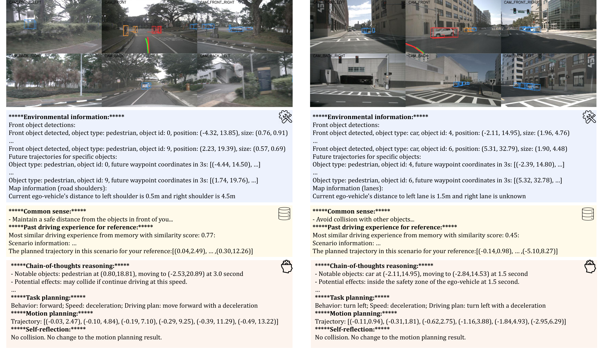
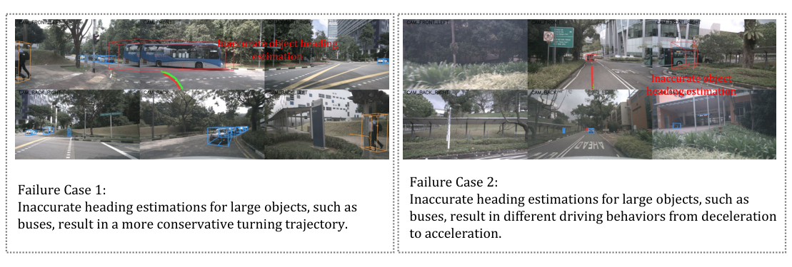
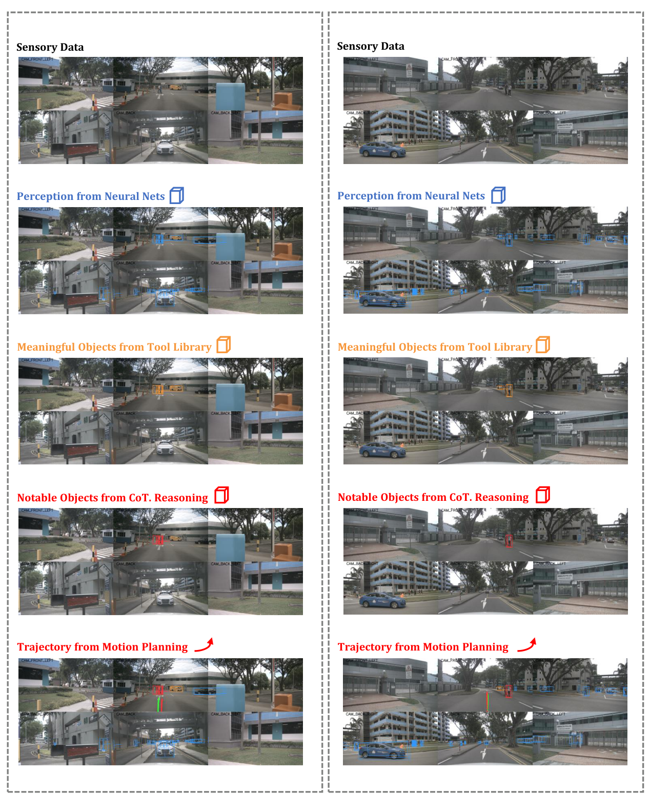

0. 页面头部：论文身份卡片
| 论文 | Agent-Driver: A Language Agent for Autonomous Driving |
|---|---|
| 作者 | Mao, Jiageng；Ye, Junjie；Qian, Yuxi；Pavone, Marco；Wang, Yue |
| 时间 | 2023/11/17 |
| 方向 | LLM agent / tool-use driving planner |
| 核心贡献 | Agent-Driver 将 LLM 作为自动驾驶认知 agent，通过工具库动态读取检测/预测/占据/地图信息，检索常识与经验记忆，并用 CoT、任务规划、运动规划和自反思生成轨迹。 |
| 模型类型 | 把自动驾驶规划器设计成语言 agent：通过工具按需查询感知/预测/地图信息，检索认知记忆，再进行推理、规划与自反思。 |
| 输入 | 神经感知模块的结构化输出，通过工具库动态查询；任务描述和历史经验记忆。 |
| 中间表示 | 工具调用筛选关键环境信息，经验记忆检索相似案例，推理引擎生成计划并通过 self-reflection 修正。 |
| 输出 | 驾驶决策、未来轨迹和语言 justification。 |
| 训练目标 | 利用专家轨迹、推理数据和记忆样例监督 agent 的工具选择、推理与规划输出。 |
| 代码与复现状态 | 是，代码公开；运行依赖 OpenAI API 和预缓存数据；高：适合语言 agent + driving tool-use 主线 |
1. 论文速览：用一页讲清楚价值
1.1 一句话贡献
Agent-Driver 将 LLM 作为自动驾驶认知 agent，通过工具库动态读取检测/预测/占据/地图信息，检索常识与经验记忆，并用 CoT、任务规划、运动规划和自反思生成轨迹。
1.2 论文专属关键词
LLM agent、tool library、cognitive memory、KNN + fuzzy search、self-reflection、nuScenes、CARLA Town05、function calling
1.3 技术定位
把自动驾驶规划器设计成语言 agent：通过工具按需查询感知/预测/地图信息，检索认知记忆，再进行推理、规划与自反思。
1.4 论文构建了什么
| 输入 | 神经感知模块的结构化输出，通过工具库动态查询；任务描述和历史经验记忆。 |
|---|---|
| 编码与融合 | 工具调用筛选关键环境信息，经验记忆检索相似案例，推理引擎生成计划并通过 self-reflection 修正。 |
| 输出 | 驾驶决策、未来轨迹和语言 justification。 |
| 训练目标 | 利用专家轨迹、推理数据和记忆样例监督 agent 的工具选择、推理与规划输出。 |
1.5 核心结论与证据链
Agent-Driver 不把 LLM 当单次 planner，而是当调度器和认知层。它先决定是否调用 detection、prediction、occupancy、map 工具，把神经模块输出摘要为文本；再用环境信息检索 cognitive memory，包括 commonsense memory 和 experience memory；最后 reasoning engine 分阶段执行 CoT、task planning、motion planning 和 self-reflection。论文/项目页强调在 nuScenes open-loop 上相对 SOTA 有超过 30% collision 改善，并在 CARLA Town05-Short 做闭环验证。
核心证据来自：工具/记忆/CoT/self-reflection 消融、轨迹指标、关键对象选择可视化和论文公开失败案例。。证据边界是：agent 选中关键对象并不保证安全因果关系；工具错误和记忆污染可能共同放大风险。
2. 研究问题与动机：为什么需要这篇论文
2.1 核心问题与成功标准
人类驾驶不只反应可见对象，还会使用经验和常识，例如看到球滚出就推断可能有儿童。传统 perception-prediction-planning pipeline 将这些知识压成数值中间量，无法灵活调用；直接让 LLM 读取所有模块输出又会冗余且成本高。Agent-Driver 的方案是用工具调用筛选关键信息，用 memory 补足经验，用 self-reflection 检查轨迹碰撞。
2.2 现有方法的具体不足
该论文针对的瓶颈不是笼统的“泛化不足”，而是：一次性把全部场景信息塞入 prompt 会产生冗余并超长；纯检索无法应对新组合，因此需要工具、记忆和推理协同。
2.3 为什么不走显而易见的替代路线
一次性把全部场景信息塞入 prompt 会产生冗余并超长；纯检索无法应对新组合，因此需要工具、记忆和推理协同。
3. 相关工作脉络：这篇论文从哪里来
3.1 技术家族与直接前作
Agent-Driver 与 GPT-Driver 作者线相连，但方法从单 prompt planner 扩展成 agentic driving system。它与 DiLu/Drive Like a Human 等知识驱动驾驶同属 LLM cognition 路线；与 OpenDriveVLA/EMMA 不同，Agent-Driver 不追求一个端到端可微 VLA，而是把 LLM 放在现有神经模块之上进行动态调度。
3.2 本文新意属于表示、架构、训练还是评估
从技术地图看，本文的主要新意可概括为：把自动驾驶规划器设计成语言 agent：通过工具按需查询感知/预测/地图信息，检索认知记忆，再进行推理、规划与自反思。。它并非简单替换 backbone，而是围绕输入表示、中间信息流或评价方式重新定义了论文的核心问题。
4. 方法总览图：先看完整信息流
4.1 主框架图与机制
4.2 信息流一句话串联
输入：神经感知模块的结构化输出，通过工具库动态查询；任务描述和历史经验记忆。；中间处理：工具调用筛选关键环境信息，经验记忆检索相似案例，推理引擎生成计划并通过 self-reflection 修正。；最终输出：驾驶决策、未来轨迹和语言 justification。；训练约束：利用专家轨迹、推理数据和记忆样例监督 agent 的工具选择、推理与规划输出。
5. 方法详解：输入、表示、融合、解码、训练与部署
5.1 输入表示
神经感知模块的结构化输出，通过工具库动态查询；任务描述和历史经验记忆。。复现时首先要确保各模态的时间同步、坐标系、可见范围与训练时一致；任何一个上游输入偏移都可能被后续大模型放大。
5.2 编码器与融合设计
工具调用筛选关键环境信息，经验记忆检索相似案例，推理引擎生成计划并通过 self-reflection 修正。
5.3 中间表示为何重要
中间表示决定模型保留何种几何、语义和时间信息。该论文的关键中间链路是：工具调用筛选关键环境信息，经验记忆检索相似案例，推理引擎生成计划并通过 self-reflection 修正。。它让最终输出能够利用这些信息，但也把上游表示误差带入规划或预测。
5.4 解码、动作生成或未来预测
驾驶决策、未来轨迹和语言 justification。
5.5 训练目标及副作用
利用专家轨迹、推理数据和记忆样例监督 agent 的工具选择、推理与规划输出。。这些目标直接约束对应监督输出，却不会自动保证真实闭环安全、跨域鲁棒性或因果可解释性。
5.6 训练阶段与数据风险
工具库封装 detection、prediction、occupancy、map 四类神经模块，函数如 get_leading_object、get_pred_trajs_for_object、get_occ_at_loc_time、get_lanes 等。LLM 多轮判断需要哪些信息，函数返回文本摘要。Memory Search 先用 embedding KNN 取 top-K，再用 LLM fuzzy ranking 选最相似经验；commonsense memory 由交通规则和风险知识构成。Reasoning Engine 依次识别关键对象、生成 high-level behavior/velocity、输出 waypoint trajectory，并用 self-reflection 重规划碰撞轨迹。
5.7 推理与部署流程
主要在 nuScenes 离线规划；工具依赖外部神经模块，agent 推理延迟与闭环稳定性未充分验证。
6. 原论文图解：逐图拆解证据含义
7.1 Figure 1：Architecture of Agent-Driver. Our system dynamically collect
7.2 Figure 2：Interpretability of Agent-Driver. In the referenced images,

7.3 Figure 3：Failure cases in Agent-Driver.

7.4 Figure 13：Visualization of how Agent-Driver progressively identifies c

7.5 Figure 20：Visualization of Agent-Driver language justification capabil
7. 实验与结果：把证据链拆开
7.1 数据集、任务与划分
实验围绕该论文的技术定位组织：把自动驾驶规划器设计成语言 agent：通过工具按需查询感知/预测/地图信息，检索认知记忆，再进行推理、规划与自反思。。需要特别区分离线预测、生成质量、开环规划与真实/仿真闭环，因为它们使用不同成功标准；本论文主要证据为：工具/记忆/CoT/self-reflection 消融、轨迹指标、关键对象选择可视化和论文公开失败案例。
7.2 Baseline 为什么重要
论文的比较应围绕其技术定位理解：把自动驾驶规划器设计成语言 agent：通过工具按需查询感知/预测/地图信息，检索认知记忆，再进行推理、规划与自反思。。强 baseline 用来判断收益来自新增信息流、模型容量还是评估协议；仅与较弱旧方法比较不足以证明论文主张。
7.3 指标如何对应论文主张
本文实验所依赖的证据为：工具/记忆/CoT/self-reflection 消融、轨迹指标、关键对象选择可视化和论文公开失败案例。。离线预测误差、生成质量、规划指标或闭环分数各自只衡量部分能力，不能互相替代。
7.4 主结果与机制是否一致
实验包括 nuScenes open-loop 和 CARLA Town05-Short closed-loop。论文报告 Agent-Driver 在 L2 和 collision rate 上显著超过 prior works，collision 相对 SOTA 有超过 30% 改善；消融研究拆分工具库、记忆和 reasoning engine 的贡献。定性结果展示 agent 能调用更少但更关键的信息，例如领先车、占据概率和左右车道信息。证据缺口是系统依赖 GPT-3.5 与外部神经模块，端到端可训练性和实时性有限。
8. 消融、失败案例与证据缺口
8.1 消融实验应回答什么
最关键的消融需要隔离该论文的核心信息流：工具/记忆/CoT/self-reflection 消融、轨迹指标、关键对象选择可视化和论文公开失败案例。。如果去掉核心模块后只在部分指标下降，需要进一步判断收益是否集中于特定场景。
8.2 失败案例与证据缺口
agent 选中关键对象并不保证安全因果关系；工具错误和记忆污染可能共同放大风险。
8.3 论文没有证明什么
现有结果不能直接推出：agent 选中关键对象并不保证安全因果关系；工具错误和记忆污染可能共同放大风险。
9. 复现要点：真正动手会遇到什么
9.1 最小可行复现路线
复现路径：下载官方仓库和预缓存 nuScenes 数据，配置 OpenAI API，运行 unit_test 验证 tool/memory/reasoning，再用 scripts/run_inference.sh 收集 pred_trajs_dict.pkl，最后 run_evaluation.sh 计算 open-loop 指标。闭环 CARLA 需要 LAV 感知模块和 Town05-Short 环境。阻塞点是 API 成本、函数调用稳定性、memory 数据库生成和 CARLA 版本。验收标准是完整 agent pipeline 输出可解析轨迹，并在同一预缓存输入下优于 GPT-Driver 类单步 planner。
9.2 数据、模型、硬件与阻塞点
数据与接口重点：神经感知模块的结构化输出，通过工具库动态查询；任务描述和历史经验记忆。。模型重点：工具调用筛选关键环境信息，经验记忆检索相似案例，推理引擎生成计划并通过 self-reflection 修正。。部署重点：主要在 nuScenes 离线规划；工具依赖外部神经模块，agent 推理延迟与闭环稳定性未充分验证。。论文未明确披露的硬件与训练成本不在此推测。
9.3 验收标准
复现成功不应只以脚本运行结束为标准，而应至少复现论文核心趋势：工具/记忆/CoT/self-reflection 消融、轨迹指标、关键对象选择可视化和论文公开失败案例。；同时检查输出是否在论文声称的边界外快速退化。
10. 分析、局限与边界：作者没说完的部分
10.1 最有价值贡献
Agent-Driver 的优势是解释性强、可插拔、容易加入规则和经验；劣势是调用链长、延迟高、模块误差仍会传递。它能支持“LLM 认知层提升长尾决策”的论点，但不能证明纯 LLM 能感知和控制。后续可把 memory 检索改为可学习 latent memory，或把 self-reflection 与 occupancy/world model 的碰撞验证结合。
10.2 主张—证据—充分性
| 论文主张 | 把自动驾驶规划器设计成语言 agent：通过工具按需查询感知/预测/地图信息，检索认知记忆，再进行推理、规划与自反思。 |
|---|---|
| 支撑证据 | 工具/记忆/CoT/self-reflection 消融、轨迹指标、关键对象选择可视化和论文公开失败案例。 |
| 充分性判断 | 对论文评测范围内的机制结论较有支持；对真实闭环、跨域或安全泛化仍不足。 |
| 原因 | agent 选中关键对象并不保证安全因果关系；工具错误和记忆污染可能共同放大风险。 |
10.3 可行改进方向
增加工具置信度和安全 verifier；测量工具调用延迟；用反事实场景测试记忆是否真正帮助。
10.4 后续实验建议
| 核心模块去除/替换 | 隔离论文主张，观察核心指标是否按预期下降 |
|---|---|
| 跨域或扰动测试 | 检查方法是否依赖训练分布和干净输入 |
| 闭环 rollout | 观察误差累积、碰撞与恢复 |
| 不确定性/安全验证 | 识别高风险预测并建立 fallback |
11. 组会问答准备
Q: 工具库为什么必要？
A: 它让 LLM 只请求决策相关信息，避免直接塞入所有检测/预测结果导致冗余和上下文爆炸。
Q: Memory Search 两阶段有什么意义？
A: KNN 提供快速候选，LLM fuzzy search 利用语义推理重排，弥补 embedding 对复杂驾驶场景相似性的不足。
Q: Self-reflection 检查什么？
A: 它根据环境和轨迹检查碰撞/安全，再决定是否重规划。
Q: Agent-Driver 是否端到端可微？
A: 不是，它是 LLM agent 叠加神经模块和工具调用，更偏系统集成。
Q: 最大部署问题？
A: 推理调用多、延迟高、依赖外部 API 和多个模块的稳定输出。
12. 我的阅读笔记：转成自己的研究素材
12.1 最值得借鉴的点
可作为“LLM agent for AD”的代表，与 OpenDriveVLA 的可微 VLA 路线形成鲜明对照。组会可问：agentic 可解释性和端到端可优化性哪个更重要？
12.2 与同目录论文的比较钩子
可从“语言是否直接影响动作、是否显式预测未来世界、是否真实闭环、是否保留 3D 几何、是否使用 agent/tool/memory”五条轴与同目录论文比较。本文的定位为：把自动驾驶规划器设计成语言 agent：通过工具按需查询感知/预测/地图信息，检索认知记忆，再进行推理、规划与自反思。
12.3 可行动创新点
增加工具置信度和安全 verifier；测量工具调用延迟；用反事实场景测试记忆是否真正帮助。
13. 附录图解与证据索引
本文使用的原始图件均来自 arXiv 源码，图注保留或准确转述。其他附录图未被机械堆入页面；只有能够解释方法、结果、消融或失败的图件才被选择。